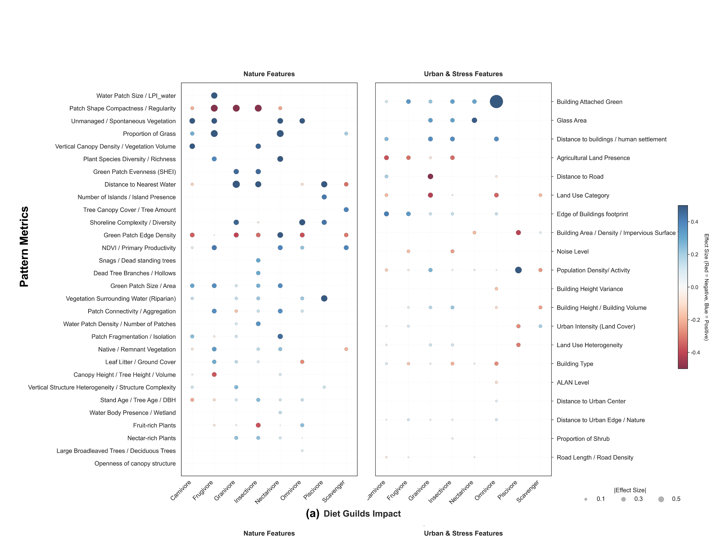
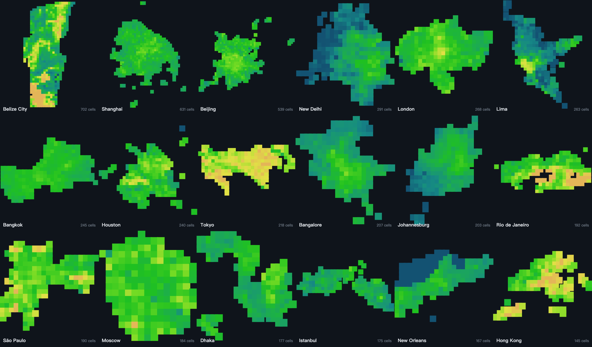
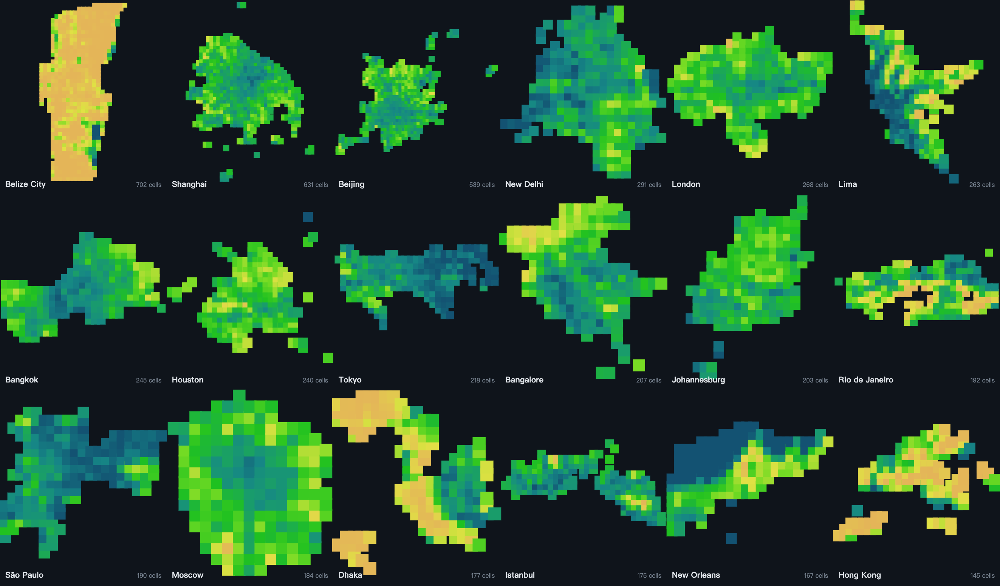
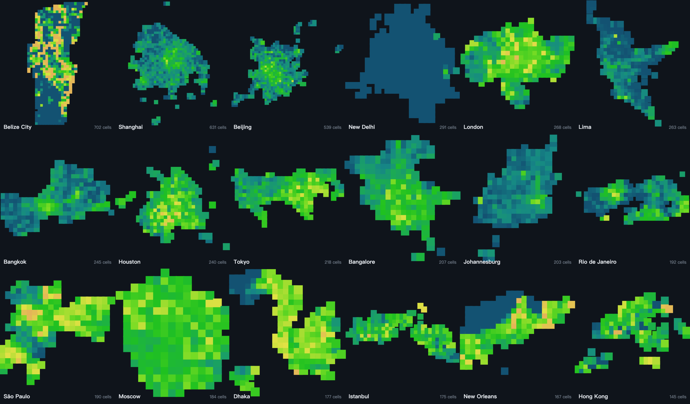
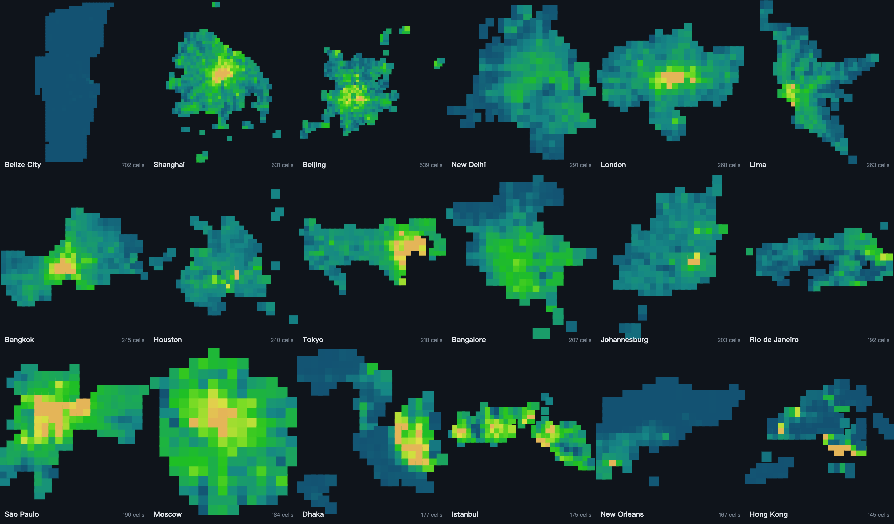
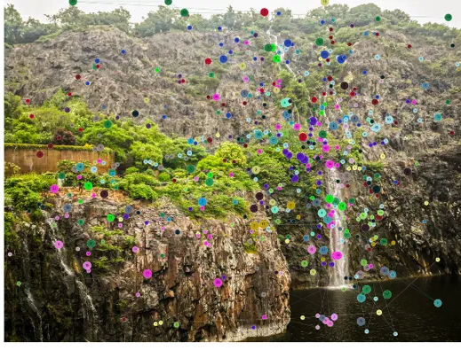
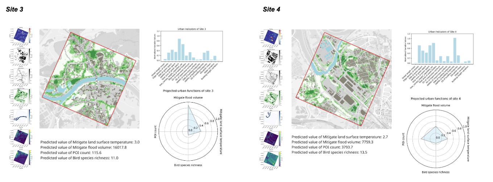
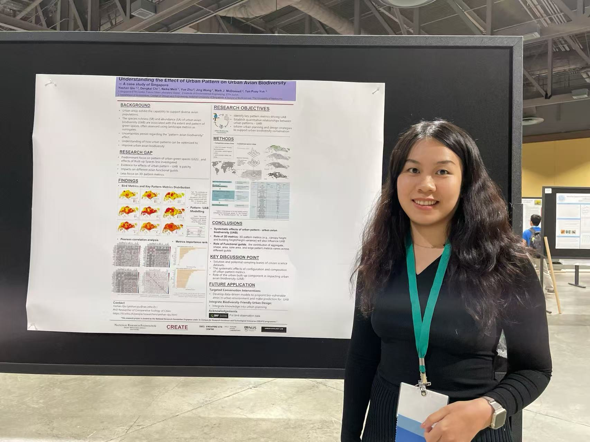
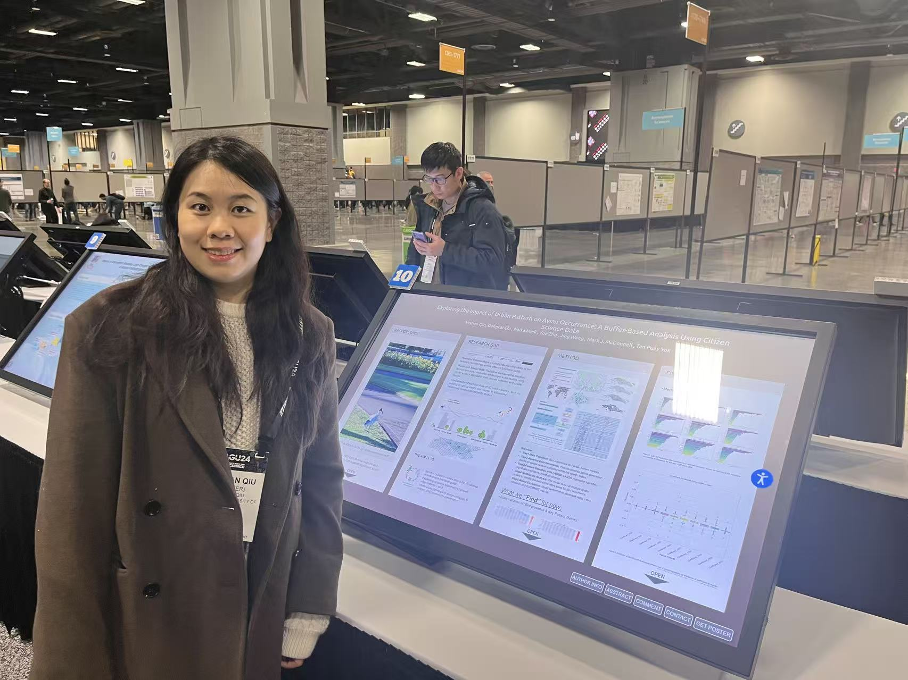

Yeshan Qiu
I am a landscape ecology researcher with a background in landscape architecture. I study how the form of a city shapes the life it can hold, especially its birds, and how people perceive the green spaces they live with. I use citizen-science records, remote sensing, and spatial models to find patterns across many cities, and I care about turning those patterns into something planners and designers can actually use.

National University of Singapore, Department of Architecture
Shanghai Jiao Tong University
Hainan University
Singapore-ETH Centre, Future Cities Laboratory Global, Comparative Ecology of Cities
Cities shape bird life in more than one dimension
How much green a city has is only the starting point. Whether birds thrive depends on what kind of green it is, how it is arranged, and what the built environment around it does to them.



The built environment does not simply push biodiversity down. It sorts it. Glass and dense building help birds that nest on buildings, while the same features stress ground-nesting and forest birds, which noise suppresses further. Built form works as a filter, supporting some guilds and constraining others.
Where green does help, the signal comes from its structure more than its extent. Taller and more varied canopies, standing deadwood, and how patches are aggregated matter more than coverage alone. The same feature can also act through different ecological processes, so its effect is not fixed. Tree canopy, for instance, supports resource access and reproduction, and helps dispersal even more.
Reading green in three dimensions and across its spatial pattern, and looking at the processes behind it, is what sustains diversity over the long run, in species, in function, and in evolutionary history.

Taken together, these findings argue for a multidimensional reading of urban biodiversity. Green amount sets the baseline, built form filters who can stay, and the structure and arrangement of green decide how much life a city can hold.
Different birds live at different scales
Studying how urban pattern affects birds depends on two choices that are easy to overlook. One is scale, the distance at which each bird group responds to its surroundings. The other is spatial representation, the kind of unit we use to read the city. That unit can be geometric, like a buffer or a grid, or it can follow urban form, like morphological zones.
Because a bird record is only a point, we always have to draw some unit around it to measure pattern, and whether that unit is geometric or morphology-based shapes how we read the link between pattern and biodiversity.


The unit also changes which factors look important, and it does so differently for each guild. One thing stayed stable across all units: proximity to resources. Distance to water and distance to canopy mattered consistently, because how close a resource is does not depend on how we draw patch boundaries. Outside that stable core, each unit privileged a different kind of metric. Buffers elevated immediate resource context, such as the core area and largest patch of water nearby. Grids elevated patch geometry and spacing, such as building fractal dimension and the variation in distances between buildings. Morphological zones retained form-linked measures, such as building cohesion, canopy contiguity, and canopy-height variance. The reshuffling was strongest for carnivores and insectivores, while frugivores kept the most consistent core.
The practical rule is to match the spatial unit to the question. Use a buffer for local habitat use and scale of effect, a grid for standardized citywide mapping and comparison. Reporting the unit becomes as important as reporting the result, because a finding only travels if others know how the city was measured. One reassurance runs through all of this: resource accessibility, how close water and canopy are, stayed important no matter which unit we used, so proximity is a dependable signal to build on.
Morphological units such as Local Climate Zones are the most useful, because they are multidimensional. A single zone combines several spatial characteristics at once, high or low rise, green or grey dominant, compact or open, and its organic, form-following boundaries align well with how administrative and planning areas are actually drawn. This makes the morphological reading easy to carry directly into planning, where decisions are made in terms of urban form rather than abstract metrics.
The same ingredients, arranged differently in every city
Once every city is measured the same way, a sharper question comes into view. Which links between urban form and bird life hold everywhere, and which depend on where the city is? Across sixty-eight cities placed on equal footing, a handful of features mattered almost everywhere. What differed was how they combined, which was rarely the same from one city to the next.


For comparison across cities to mean anything, we cannot fall back on a single universal rule. The drivers recur, but how they act is context-dependent. Reading a city's bird life well means reading it together with the landscape it sits in.
68-City Urban Pattern Database
Behind these comparisons sits a database. To place sixty-eight cities on equal footing, we compiled a consistent set of urban pattern metrics for each one, covering canopy, built form, water, and land use, all measured the same way. The database is being prepared for open release, and will be made publicly available once the associated study is published, so that others can reuse it for their own urban ecology and planning work.





Each panel shows one metric across a set of cities, mapped the same way so cities can be read side by side. Together they turn scattered urban form into a comparable, reusable record: how tall and how continuous the canopy is, how much of the ground it covers and how it is interspersed, and how much built volume a city carries. This is the raw material the comparative study is built on.
Compiled by Wang Jing and Dr. Yeshan Qiu, Comparative Ecology of Cities, Future Cities Laboratory Global.
People look for nature first
The first three studies ask how the form of a city shapes its birds. This one turns to the people who live alongside them. When someone looks at an urban green space, what draws their eye, and does what draws the eye shape whether they find the place beautiful?




Together, eye-tracking and deep learning show that ecological quality and aesthetic appeal are not separate things. People are drawn to what is more natural, and tend to find it more beautiful. Designing greener, more ecologically sound spaces is, at the same time, designing spaces people are drawn to.
Ecological Indicators, 2023, first author. Master's research at Shanghai Jiao Tong University. PI Prof. Shengquan Che, co-PI Prof. Haozhi Pan.
From research guidelines and prediction to the design studio
The first studies build two things: a set of guidelines for how urban form can support birds, and an ability to predict how a change in form would shift bird diversity. Both are only useful if they can enter the place where decisions about form are actually made. This last piece is an early attempt to do exactly that, inside a design studio.


Team outcome. The dashboard and model cover flood, health, temperature, and economic functions as well as biodiversity. My contribution is the biodiversity part: the design guidelines drawn from the research, and the prediction model behind them.
What happened next was interesting, and not simple. Students began to reason about design from an ecological angle they might not have reached on their own, testing how a shift in massing or green space would move the numbers.
The experiment also showed its limits, and each limit pointed somewhere. A predicted number can narrow imagination as easily as it can open it, so a useful tool has to offer direction and trade-offs rather than a single answer. The questions students asked, why a change helped or hurt birds, showed that prediction alone is not enough without the processes behind it. And a real Hong Kong site is far messier than a standardized grid, which asks for models that can handle specific, complex places. We make no claim that the panel produced better designs. It was an exploratory experiment in how research findings might enter a design process. What it taught me is concrete: to inform design well, a model needs to be more mature, more process-aware, and able to speak to real sites. That is the work I am building toward next.


Talks and conference presentations
This work has been presented to the international research community, and to the agencies who build and manage cities.



Posters at the British Ecological Society Annual Meeting (2025), the AGU Fall Meeting (2024), and the Ecological Society of America Annual Meeting (2024).
Future directions
These studies rely on biodiversity data that is scattered, uneven, and hard to compare across cities. A first direction is to change that: to mine and integrate biodiversity records into a consistent, living information base, one that can be updated as cities change rather than frozen at a single point in time. Building this data foundation is what makes everything after it possible.
On top of that base, I want to move from describing patterns to modelling the processes behind them: how urban form shapes the resources animals can reach, and the routes along which they move and disperse. Borrowing from the idea of a digital twin, the goal is a model that does not just record a city, but can simulate how changing its form would change the life it supports, and trace those effects through the connected system rather than one metric at a time. This is where my ongoing work begins, on graph-based, multi-city prediction.
In the longer run, such a system could inform how cities are monitored and managed, turning ecological evidence into a dynamic tool for planning rather than a static report. Placed against the wider forces of climate change and land-use change, and read through the lens of macroecology, this work can help us understand how the way we build and use land shapes biodiversity far beyond any single city.
Urban biodiversity and avian ecology · landscape ecology · macroecology · urban green space · spatial modelling and GeoAI · graph-based prediction · species distribution modelling · 3D vegetation structure · landscape pattern metrics · biodiversity data integration · GIS and remote sensing · biodiversity-informed planning · ecological aesthetics · cultural ecosystem services
Before the research, there was design. These two projects are where the questions started, on real sites, with real trade-offs between people and the life a place can hold.
Birds Advance, People Retreat
A bird-priority green space for the Huangpu River estuary
At the cross-confluence of the Huangpu River, we asked a simple question with hard consequences: what would a site look like if birds came first and people stepped back? The design organises the estuary around habitat, giving the core of the site to birds and holding human activity to its edges.
Resilient, low-disturbance zones let the shoreline flood and recover, and the planting is built for shelter and food rather than display. It was a design argument that a city can choose to make room for other species, and it is the question the research later set out to answer.

CHSLA National Student Landscape Architecture Design Competition, Third Prize (graduate group), 2019. Team: Niu Shuang, Qiu Yeshan, Zheng Chenlu, Hu.
Reading a City on Foot
Field research in Bulgaria, Shanghai social-practice programme
Leading a small team, I spent a field season reading a city the slow way, on foot, mapping how people use public space and how green and built fabric fit together. The work was less about proposing a plan than about learning to see a place on its own terms, through observation, documentation, and conversation.
It shaped how I approach every site since: start by understanding what is already there before deciding what to change.


Shanghai social-practice programme, Second Prize, 2018. Team leader, with Jin Chuhan, Xie Hongli, and Long Zeyu. Press coverage